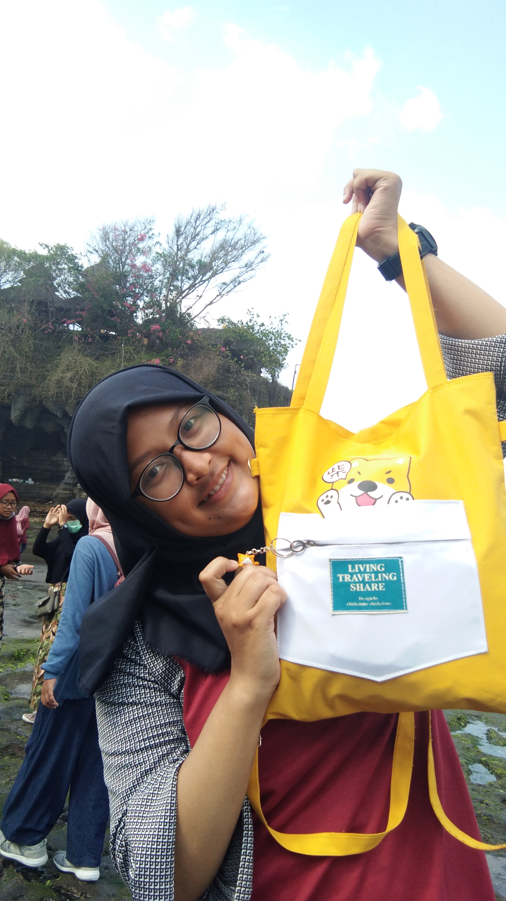

 |
|
|
Data Pribadi
Nama Lengkap : Delvi Fitri Assary Tempat,Tanggal Lahir : Cilacap, 08 Desember 2002 Jenis Kelamin : Perempuan Agama : Islam Alamat : Jalan Bakung No.17 RT.04/Rw.06 Sidakaya,Cilacap Selatan,Cilacap Kewarganegaraan : Indonesia Tinggi Badan : 165 cm Berat Badan : 68 kg Status : Mahasiswa E-mail : delvi.assary@mhs.unsoed.ac.id Nomor HP : 08156651454 Pendidikan Formal 2008-2014 : SD NEGERI KAMPUS KLUWIH TAMBAKREJA 10 2014-2017 : SMP NEGERI 8 CILACAP 2017-2020 : SMK NEGERI 1 CILACAP (TEKNIK KOMPUTER DAN JARINGAN) Pengalaman Organisasi Menjadi anggota aktif dalam anggota PMR SMK NEGERI 1 CILACAP, pada saat ada kegiatan saya pernah menjabat sebagai seksi konsumsi, seksi humas, dan seksi perlengkapan. |